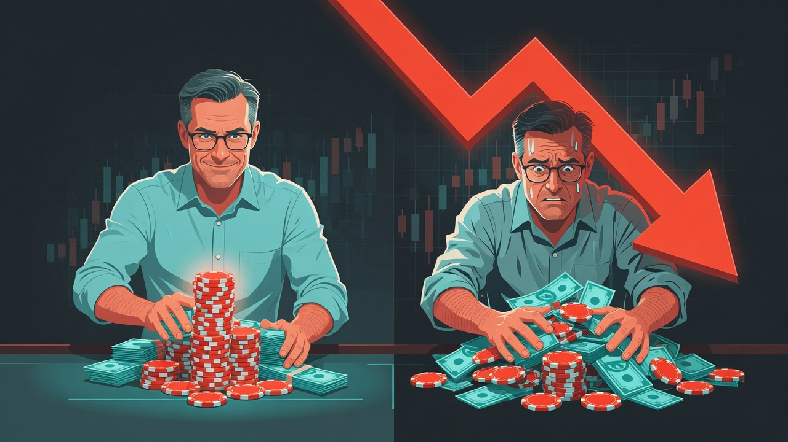

The Slack channel had gone quiet.
Three weeks earlier, #watercooler had been chaos — rocket emojis, victory screenshots, and someone's crude photoshop of Jason's face on a golden bull. Now it was strangely still. ArgentAI had collapsed more than sixty percent in eleven days, and the people who had been loudest were the ones who had gone quietest.
Mike sat in the break room on the fourth floor, slowly stirring his coffee. When Priya from Product walked in and asked, carefully, what he thought about "The Oracle's" situation, Mike did not gloat. He simply said it, to himself:
"I knew this would happen."
The words felt different than they would have a month ago. Back then, staying out of ArgentAI had felt like discipline. Now, it felt like evidence.
Something had quietly shifted inside him.
For the first time in a long while, Mike did not feel like a man who had merely avoided a mistake. He felt like a man who had seen something — something the entire fourth floor had missed while they were busy high-fiving over rocket emojis. The restraint he had shown during the frenzy no longer felt like caution. It felt like insight. Like he was finally developing a real edge.
The feeling was subtle. It was also the most dangerous thing that had happened to him all year, and he had no idea.
Two weeks later, he found what he was looking for.
A mid-sized cybersecurity company called SentinelForge had released the technical details of a new zero-trust architecture. As an IT systems manager who had spent fifteen years living inside enterprise security infrastructure, Mike understood the advantages in a way most sell-side analysts never could. He spent four straight evenings at the kitchen table after Sarah had gone to bed — reading whitepapers, mapping patents, and building comparison models in a spreadsheet that grew to nine tabs.
This was not speculation. This was work. And the work was good — that part was real.
On a quiet Thursday evening, Mike sat at the desk in the spare bedroom he used as a home office. There was no hammering heart this time, none of the sweaty, thumb-hovering panic he had felt the night he almost bought ArgentAI. No second-guessing. Just a calm, steady certainty, smooth as still water.
He opened his brokerage account. He sold most of a broad-market ETF — the boring, diversified core he had held and added to patiently for years — and swept in the cash he had sitting on the sidelines. He moved it all into SentinelForge. The largest single position he had ever taken in his life.
He never paused to notice the irony: that the quiet, patient discipline he was so proud of was the very thing he was now dismantling.
As he clicked Confirm, one clear thought passed through his mind:
This time, I know what I am doing.
He should have noticed the calm. The calm was the symptom. But you never notice the symptom when it feels like clarity.
SentinelForge reported earnings nine days later.
The technology numbers were strong, adoption ahead of guidance, exactly as Mike had modeled. He felt a flush of vindication reading the release. Then the stock opened down fourteen percent.
The forward guidance had come in soft. Enterprise customers were stretching out their security budgets in a tightening macro environment — the same macro environment Mike had read about, shrugged at, and filed under noise during those four evenings at the kitchen table. He had built nine tabs on the architecture. He had built zero on the spending cycle.
A normal investor might have paused there. Mike did the opposite. He did not ask whether he had missed something. He asked what was wrong with the market.
They are reading it backward, he thought. They are punishing a budget-timing issue and ignoring the moat. I know this technology better than the analyst who just downgraded it. Give it a quarter. They will see what I see.
He was right about the technology. That was the trap.
Being right about the technology had nothing to do with being right about the stock, and his expertise — the genuine, hard-won thing he was so proud of — became the exact instrument he used to dismiss every warning the price was screaming at him.
The stock kept sliding. Down twenty. Down twenty-eight.
So Mike did the thing he would have called insane in anyone else. He added to it.
He told himself it was rational — that if SentinelForge was a buy at the original price, it was a gift now, thirty percent cheaper. That is the story he wrote down. But the real reason was quieter, and far more human. Selling now meant booking a loss. Booking a loss meant admitting the trade was a mistake. And admitting the trade was a mistake meant admitting that the feeling — I finally see what others miss — had been an illusion all along.
He was not protecting his capital anymore. He was protecting the version of himself he had met in that break room.
The late nights came back, the way they had with the semiconductor stock years ago. He would lie awake until Sarah's breathing slowed, then pad down the hall to the spare bedroom and refresh the after-hours price at 2 a.m., as if watching closely enough might bend it back up.
One night Sarah found him there, the monitor washing his face in pale light.
"You have been weird for two weeks," she said gently, leaning in the doorway. "Is it work?"
"Just a position I am managing," he said. Which was true, and a lie, and he knew it.
She looked at the screen, then at him. She did not know the number. She did not know how far down it was. He did not tell her. He told himself he would tell her once it came back.
He never said the number aloud. Not once. That was how he knew, somewhere underneath the certainty, that part of him already understood.
The recognition came on an ordinary Tuesday.
Jason — "The Oracle" — looked thinner somehow, the swagger gone. For a second Mike felt superior. Then something colder landed on top of it.
Mike passed Jason in the hallway by the printers. Jason, "The Oracle," looked thinner somehow, quieter, the swagger gone out of his walk. He gave Mike a small, flat nod and kept moving. And for a second Mike felt the old flush of superiority rise automatically — at least I am not him — before something colder landed on top of it.
He was holding a collapsing position he refused to sell, out of pride, telling himself the market was wrong.
He was Jason. He had just had a more sophisticated story about it.
He sold SentinelForge that Friday. Not at the bottom, not at the top — somewhere in the numb middle, the way most people actually capitulate. The loss was the largest he had ever taken, larger in a few weeks than the patient ETF had quietly earned him in years.
That night, lying in the dark with the ceiling fan turning slowly above him and the humid Austin air pressing on the windows, Mike waited for the lesson to feel clean.
It did not.
Because a small voice was still down there, defending him. The technology really was better. The macro really did blindside everyone. You were early, not wrong. And the terrifying thing — the thing he was just barely honest enough to notice — was how good that voice felt. How much it wanted to be true. How easily, given a month and a single lucky call, he could believe it all over again.
He had said it so confidently in the break room. I knew this would happen.
He knew now that he had not known anything. He had guessed right once, and let it convince him he could see the future.
What Actually Happened?
Mike did not lose money because his research was bad. His research was genuinely good.
He lost money because he confused good process with predictive ability — and then defended that confusion with everything he had.
After staying out of ArgentAI, Mike fell into Self-Attribution Bias: he took full personal credit for one correct call and quietly converted it into proof that he possessed superior market insight. That fed an Illusion of Control — because he understood SentinelForge's technology deeply, he believed he could foresee how the stock would move, which is a completely different thing.
When the earnings report exposed a risk he had ignored, he did not question his thesis. He questioned the market. And as the position fell, Escalation of Commitment took over: he added to the loser, not because the odds had improved, but because cutting it meant admitting that the flattering new story about himself was false.
The calm he had felt placing the trade was never wisdom. It was the symptom.
The Science Behind It

The most dangerous overconfidence rarely feels like arrogance. It feels like clarity.
The most dangerous form of overconfidence rarely feels like arrogance. It feels like clarity.
After a win — especially one that validates your restraint — the brain quietly rewrites its own story. Psychologists call this Self-Attribution Bias: we credit good outcomes to our own skill and blame bad ones on luck or outside forces. One correct call can convince a person they have developed genuine predictive ability.
It gets more potent when fused with Hindsight Bias — the conviction, after the fact, that we "knew it all along." When ArgentAI crashed, Mike did not think I was fortunate to stay out. He thought I knew it was a bubble. That small linguistic shift, captured perfectly in the title of this article, is exactly where overconfidence takes root.
Ellen Langer's classic 1975 research on the Illusion of Control showed how easily involvement masquerades as influence. Participants who were allowed to choose their own lottery numbers demanded far more money to sell their tickets than those handed random ones — as if choosing the digits changed the odds. Mike did not just buy SentinelForge; he immersed himself in it. He read the papers, built the models, chose the size. So when it moved against him, his mind refused to accept that the outcome was outside his control.
Brad Barber and Terrance Odean documented the cost across hundreds of thousands of real accounts: overconfident investors trade more actively, hold more concentrated positions, and earn meaningfully lower net returns. The more certain they feel, the more damage they do. Don Moore and Paul Healy sharpened the diagnosis — the problem is often not just confidence but over-precision: being too sure that a narrow estimate is right. Mike did not merely believe SentinelForge was a good company. He believed he could predict how the market would price it.
And Daniel Kahneman delivered the quiet killer: professional stock pickers show almost no year-to-year correlation in their results. What looks like durable skill is, statistically, mostly luck dressed up as insight.
Then there is the mechanism that turned a bad call into a real loss. Escalation of Commitment is why Mike added to a falling position instead of cutting it. Barry Staw's 1976 research ("Knee-Deep in the Big Muddy") showed that people throw good money after bad not because the new investment looks attractive, but because stopping feels like admitting failure. Mike was not defending his capital at that point. He was defending his self-image as the man who saw what others missed.
This is the thread that runs through the whole series: discipline is a real edge. The belief that you can forecast is not. Mike's discipline was genuine. His mistake was mistaking it for prophecy.
Process improves decisions. It does not eliminate uncertainty.
He never said the number aloud. Not once. That was how he knew, somewhere underneath the certainty, that part of him already understood.
Your Behavioral Takeaway
The next time you feel unusually, calmly certain about a trade, ask yourself one honest question:
"Is this conviction — or do I just want to be right again?"
Because the most dangerous sentence an investor can say with confidence is the one Mike said to himself: This time, I actually know what I am doing.
Here are four tools to protect yourself from it:
- The Conviction Test: Before any trade where you feel unusually sure, write down four answers — What is my exact thesis? What specific evidence would prove me wrong? What is my confidence level, as a percentage? Why might the market disagree with me right now? If you cannot answer all four clearly, cut the size.
- The Pre-Mortem: Before you execute, write one short paragraph that begins: "It is six months from now and this position has lost money. Here is why it happened." This forces you to argue against your own certainty while it still costs you nothing to listen.
- Position-Size Discipline: Set a hard rule in advance — no single idea may exceed a fixed percentage of your portfolio, no matter how strong the conviction feels in the moment. Mike's thesis was not what ruined him. The size was.
- The Humility Habit: Keep a written record of your major decisions — your thesis at the time, your confidence, and what happened. Review it regularly. You cannot rewrite history you wrote down, which makes it the single best defense against self-attribution and the quiet lie of "I knew it all along."